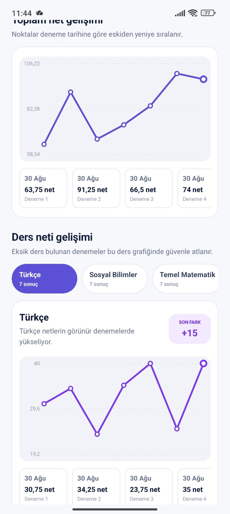
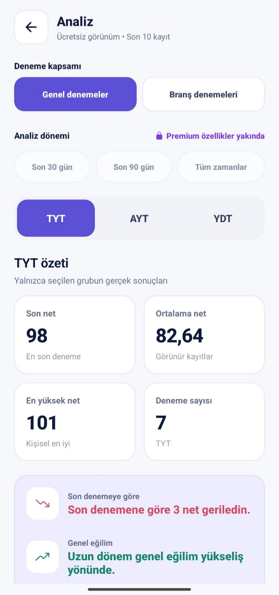

01
Deneme Takibi
TYT, AYT ve YDT denemelerini kaydet. Sonuçlarını düzenli şekilde takip et.
Deneme sonuçlarını kaydet, çalışma planını düzenle, görevlerini takip et ve gelişimini gerçek verilerle gör.


Denemem, YKS sürecini daha anlaşılır ve takip edilebilir hale getirmek için temel çalışma araçlarını tek yerde toplar.
TYT, AYT ve YDT denemelerini kaydet. Sonuçlarını düzenli şekilde takip et.
Net değişimlerini, genel eğilimini ve ders bazındaki performansını gör.
Günlük çalışmalarını düzenle, hedeflerini takip et ve ne yapman gerektiğini netleştir.
Son denemeni geçmiş sonuçlarınla karşılaştır. Ortalama netini, en yüksek sonucunu ve genel eğilimini tek ekrandan takip et.
Denemem'in hangi bilgileri kullandığını, bu bilgilerin neden işlendiğini ve hesabını nasıl silebileceğini açık şekilde görebilirsin.
Hesap, yedekleme, veri silme veya Denemem ile ilgili diğer konularda bize ulaşabilirsin.